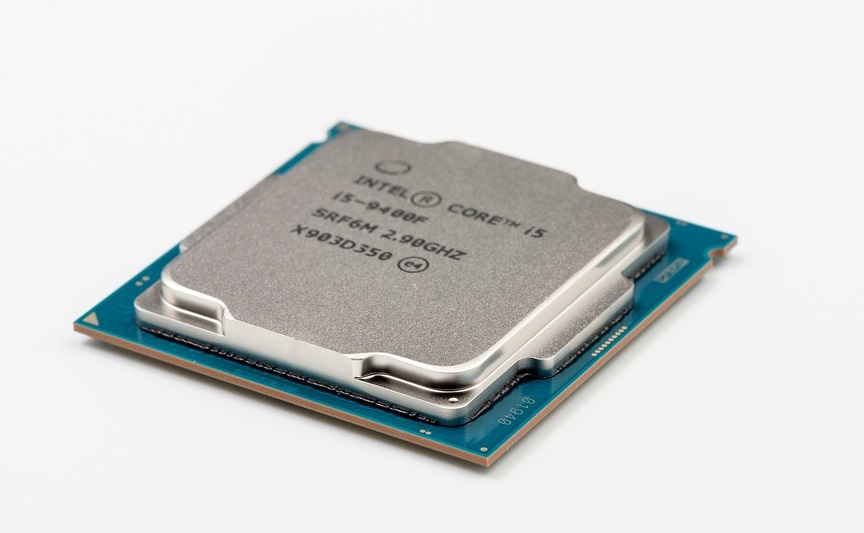
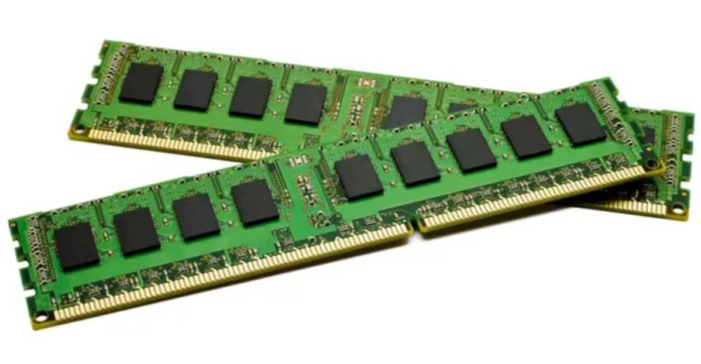
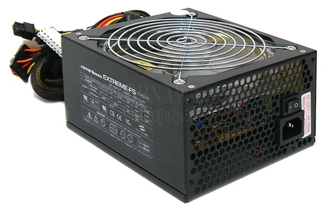
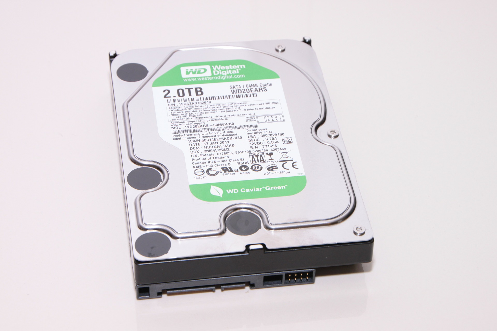
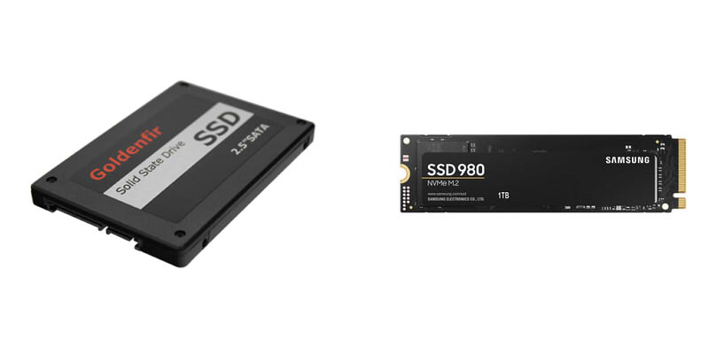
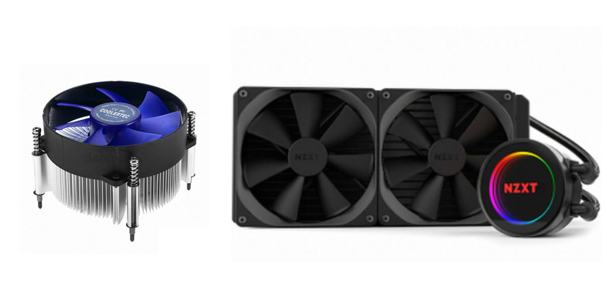
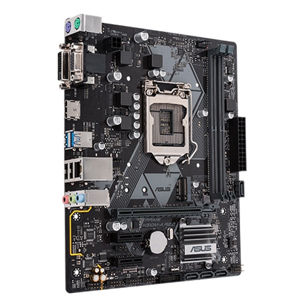
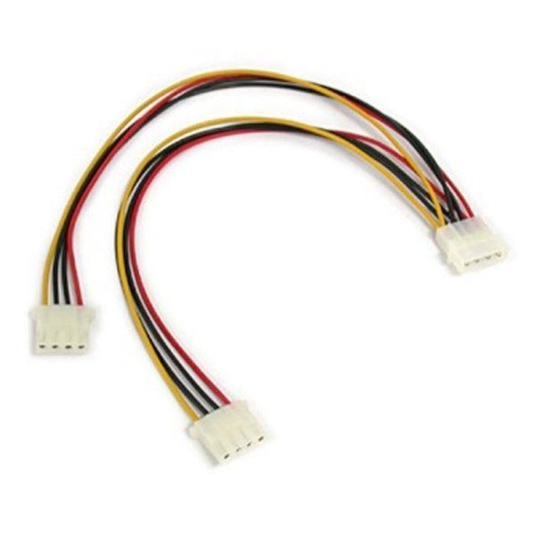
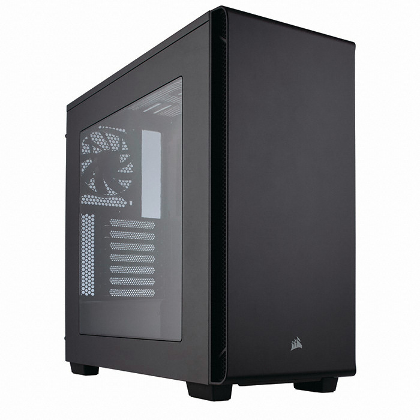

1.CPU

컴퓨터의 두뇌에 해당하는 부품입니다.
나머지 부품에 명령을 내리는 역할을 하므로,
CPU가 좋을수록 각 부품들이 성능을 잘 끌어올릴 수 있게 됩니다.
2.RAM

컴퓨터의 책상에 해당하는 부품입니다.
램이 많을수록 동시에 많은 일들을 수행할 수 있습니다.
3.그래픽카드(VGA)

CPU의 명령을 받고 그래픽을 처리하여 모니터로 보여줍니다.
GPU가 이 그래픽카드안에 내장되어 있습니다.
NVIDIA, AMD 등은 그래픽카드 내부의 GPU를 만든 회사입니다.
그리고 그 GPU를 받아서 그래픽카드를 만드는 회사가 바로 MSI, ASUS, GIGABYTE 등 입니다.
4.파워 서플라이(파워, PSU)

컴퓨터의 심장에 해당하는 부품입니다.
Power Supply(전원 공급 장치)의 이름에 걸맞게, 부품에 전기를 공급하는 아주 중요한 부품입니다.
5-1.HDD(하드 디스크, Hard Disk Drive)

컴퓨터의 노트에 해당하는 부품입니다.
사용자의 데이터 파일들을 보관하는 저장소와 같은 역할을 합니다.
용량이 클수록 많은 데이터를 담을 수 있습니다. 용량의 단위는
1024MB = 1GB, 1024GB = 1TB ...
5-2.SSD(Solid State Drive)

HDD와 같은 역할을 하는 부품입니다.
SSD는 데이터를 읽고 쓰는 속도가 HDD보다 훨씬 빠릅니다.
내구성, 전력소비, 소음 측면에서도 HDD보다 우수합니다.
그러나, 가격이 비싸고 방전될 경우 데이터가 손실될 수 있으니 사본을 백업하는 게 좋습니다.
용량이 클수록 많은 데이터를 담을 수 있습니다. 용량의 단위는
1024MB = 1GB, 1024GB = 1TB ...
6.쿨러(CPU쿨러, 공랭쿨러, 수랭쿨러)

쿨러가 없으면 CPU의 발열로 인하여 컴퓨터 내부 온도가 상승하여 좋지 않은 영향을 끼칩니다.
공랭쿨러는 공기를 이용하여 냉각하는 방식이고, 수랭쿨러는 냉각수를 이용하여 냉각하는 방식입니다.
수랭쿨러는 공랭쿨러에 비해 발열을 잘 잡아주지만, 누수 문제가 드물게 발생합니다.
7.메인보드(Mainboard, Motherboard)

컴퓨터의 혈관에 해당하는 부품입니다.
컴퓨터의 부품들을 하나로 연결하고 각 부품에 전기를 분배하는 회로기판 입니다.
메인보드의 성능은 대부분 상향 평준화 되어있기 때문에,
오버클럭을 할 것이 아니라면 저가형 메인보드로도 충분합니다.
8.선, 케이블
각 부품들을 하나로 연결할 때 필요한 부품입니다.
9.케이스

컴퓨터의 부품들을 고정하고 보호하는 부품입니다.
케이스의 종류에 따라 디자인, 재질, 파워 장착 방식, 규격 등이 다릅니다.